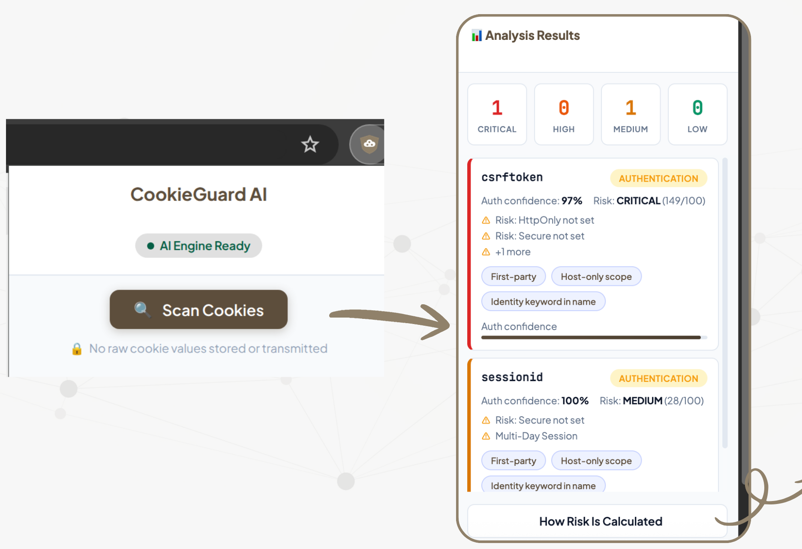
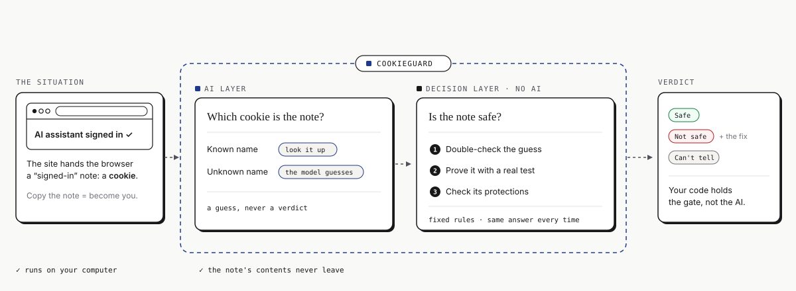

Deterministic cookie security, on your device. CookieGuard finds the cookie that keeps you signed in, proves it, and checks that it is protected. The AI guesses; fixed rules decide.
pip install cookieguardNot a developer? Get the Chrome extension →

See which cookie keeps you signed in on any site, and whether it is protected. Nothing leaves your browser.
Get the extension# in CI, against your own app $ npx cookieguard-ci@0.2.0 scan \ http://localhost:3000 \ --auth-cookie session_id FAIL CG001 Missing HttpOnly on session_id fix: add HttpOnly to Set-Cookie exit 1 # 0 pass · 1 fail · 2 incomplete
Scan a login in CI. Twelve checks, a fix for each, exit codes you can gate on. The same checks as an MCP server for Claude Code and Cursor, and a Playwright helper.
Set up CI or MCP
The agent signs in; CookieGuard checks the session cookie before the first private action. PASS, the agent continues; FAIL, it stops with the fix. Browser Use, local or cloud.
See the agent gateAn AI layer looks up known cookie names and lets a local model guess the rest. A decision layer, with no AI in it, double-checks the guess, proves it by removing the cookie and reloading, and runs twelve fixed checks. Every surface above uses the same engine. How it works →

12,481 labeled cookie names and 16,571 cookies observed on 788 real websites in November 2026. Search it, download it, cite it. CC BY 4.0, no cookie values.
Browse the databasePreregistered studies: the model, the rules, a cloud AI on the same cookies, and a security report on login cookies in the wild. Every number on this site traces to a frozen results file.
Read the research